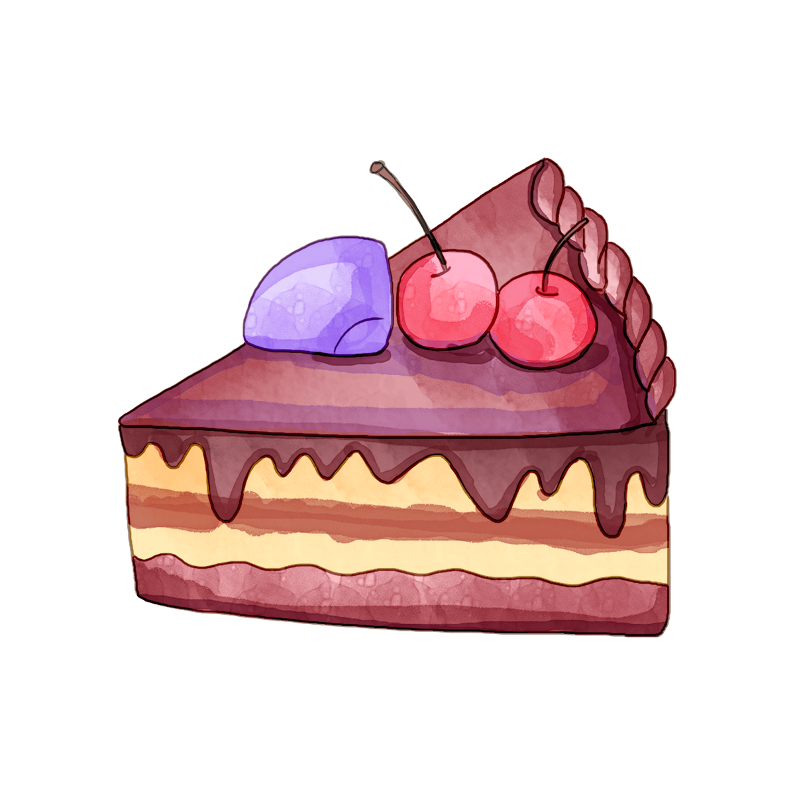

Vişneli Kek Tarifi
Kaç Kişilik: 4 Kişilik Hazırlama Süresi: 30 Dakika Pişirme Süresi: 10 Dakika
Çikolatalı Vişneli Kek Tarifi İçin Malzemeler
- 3 adet yumurta
- 1 su bardağı şeker
- 1 su bardağı su
- Yarım su bardağı sıvı yağ
- 1 paket vanilya
- 1 paket kabartma tozu
- 2,5 su bardağı un
- 2 yemek kaşığı kakao
- 1 dolu yemek kaşığı kahvaltılık çikolata
Çikolatalı Vişneli Kek Tarifi Nasıl Yapılır?
- Yumurta, şeker ve vanilyayı köpük köpük oluncaya kadar mikserle çırpalım.
- Ardından su ve sıvı yağı ekleyip karıştıralım.
- Kuru malzemeleri eleyerek ekleyelim.
- 1 yemek kaşığı çikolatayı da ekleyip son kez çırpalım.
- Hazır olan harcımızı yağlanmış kek kalıbına döküp üzerine vişneleri dizelim.
- Damla çikolatayı ve badem kırdığını serpip önceden ısıtılmış 180 derece alt üst ayar fırında pişirelim.